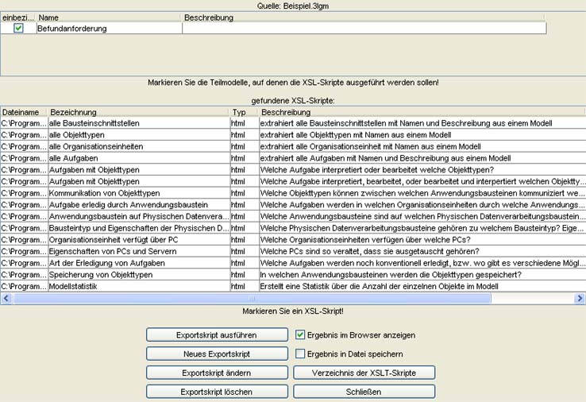

Importieren und Exportieren von Modellen
Die Importfunktionen erhalten Sie über das Menü Datei > Import...
Sie haben zwei Möglichkeiten Modelle zu importieren. Über den Menüpunkt Teilmodelle importieren...
können Sie ein oder mehrere Teilmodelle eines bestehenden Modells importieren. Über Gesamtmodell importieren
können Sie ein vollständiges Modell in Ihr Modell importieren.
Teilmodell importieren
Wenn Sie Datei > Import... > Teilmodell importieren... gewählt haben, erscheint ein Dialog,
in dem Sie eine Modelldatei öffnen können.
Nach dem Einlesen der Datei, werden Ihnen die Teilmodelle aus diesem Modell in einer Liste aufgezeigt.
Wählen Sie die zu importierenden Teilmodelle durch setzen eines Häkchens vor das entsprechende
Teilmodell aus. Klicken Sie auf Teilmodelle importieren um die ausgewählten
Teilmodelle zu Ihrem Modell hinzuzufügen.
Gesamtmodell importieren
Um ein Gesamtmodell zu importieren wählen Sie Datei > Import... > Gesamtmodell importieren....
Das gewählte Modell wird dann Ihrem Modell hinzugefügt.
Die Exportfunktionen erhalten Sie über das Menü Datei > Export...
Es stehen Ihnen mehrere Möglichkeiten zur Verfügung ein Modell oder Teilmodelle zu exportieren.
Als Grafik exportieren
Wird im Dokumentfenster ein Modell angezeigt, so können Sie dieses als Grafik exportieren.
Nach Auswahl von Datei > Exportieren... > Als Grafik exportieren... wird Ihnen
ein Dialogfenster angezeigt, in dem Sie der zu exportierenden Datei einen Namen geben und ein Verzeichnis
auswählen können.
Unter Dateityp können Sie den Dateityp der Grafikdatei auswählen.
Durch Klick auf Speichern wird die Datei exportiert.
Export über XSLT
Die Möglichkeit über XSLT zu exportieren erhalten Sie nach Auswahl des Menüs
Datei > Exportieren > Export über XSLT...
Mit Hilfe von XSLT haben Sie die Möglichkeit ein ganzes Modell oder einzelne Teilmodelle in verschiedene
Formate zu exportieren. Im Moment wird diese Funktion verwendet um 3LGM²-Modelle in HTML Beschreibung zu
konvertieren, welche in einem Browser angezeigt werden kann. Die dazu notwendigen XSLT Skripte stehen im 3LGM²-Baukasten
zur Verfügung.

Abb.: Dialogfenster 'Export über XSLT'
Im Dialogfenster Export über XSLT wird Ihnen zuoberst die zu exportierende Quelle angezeigt. Dies
ist Ihr aktuelles Modell. In einer Tabelle sind alle Teilmodelle dieses Modells aufgelistet. Standardmäßig
sind alle Modelle zum Export ausgewählt. Dies erkennen Sie an dem Häkchen in der Spalte mit dem
Namen einbeziehen. Wollen Sie eines der Teilmodelle aus dem Export ausschließen, so deaktivieren Sie das
Häkchen.
In der darunter liegenden Tabelle finden Sie eine Auswahl von Skripten. Sie können jeweils eines der Skripte
ausführen. Wählen Sie das auszuführende Skript durch Auswahl der Zeile in der Tabelle.
Sie können nun das Ergebnis des Exports in einer Datei speichern und, falls es sich bei dem Export um eine
Datei vom Typ HTML handelt, im Browser anzeigen lassen. Wählen Sie dazu die Schaltflächen Ergebnis im
Browser anzeigen oder Ergebnis in Datei speichern aus.
Starten Sie den Export über die Schaltfläche Exportskript ausführen.
Die angezeigten Exportskripte werden aus einem Verzeichnis oder mehreren Verzeichnissen geladen. Mit dem Knopf Verzeichnis
der XSLT Skripte können Sie die Verzeichnisse, in denen nach XSLT Skripten gesucht werden soll, ändern.
Anmerkung: Über den Knopf Exportskript löschen können Sie ein Exportskript aus der Liste der Skripte entfernen.
Das Skript wird dann auch aus dem Verzeichnis, aus dem es geladen wurde, gelöscht.
Teilmodelle exportieren
Diese Funktion erhalten Sie über Datei > Export > Teilmodelle exportieren.... Sie haben hier die Möglichkeit
ein Teilmodell ihres Modells zu exportieren. Bei Aufruf dieser Funktion wird Ihnen eine Liste der Teilmodelle
ihres aktuellen Modells präsentiert. Wählen Sie zu exportierende Teilmodelle durch
setzen eines Häkchens in der Spalte exportieren aus. Wählen Sie eine Datei aus,
in die die Modelle exportiert werden sollen. Tragen Sie unter Ziel den vollständigen Pfad
der Datei ein, in welche die Teilmodelle exportiert werden sollen, oder geben Sie mit Hilfe des Dialogs
durchsuchen einen Pfad und Dateinamen an.
Gesamtmodell exportieren
Mit dieser Funktion können Sie das gesamte Modell unter einem anderen Namen abspeichern.
Web-Export
Diese Funktion erhalten Sie über Datei > Export > Web-Export....
Der Web-Export ist ein XSLT Export, welcher ausschließlich HTML Dateien generiert. Sie haben dadurch
die Möglichkeit Ihr Modell oder einzelne Elemente des Modells in HTML Format zu exportieren und
im Browser anzeigen zu lassen. Im Dialog Web-Export werden in einer Tabelle alle exportierbaren
Elemente angezeigt. Wollen Sie ein Element nicht exportieren, so entfernen Sie das Häkchen in der Spalte
einbeziehen.
Unter Ziel wird ein Ordner angegeben, in dem der Web-Export gespeichert wird.
Klicken Sie auf OK um den Web-Export zu starten.
Für die in der Tabelle angezeigten Elemente sind Exportskripte vorhanden.
Diese Exwerden aus einem Verzeichnis oder mehreren Verzeichnissen geladen. Mit dem Knopf Verzeichnis
der XSLT Skripte können Sie die Verzeichnisse, in denen nach XSLT Skripten gesucht werden soll, öndern.